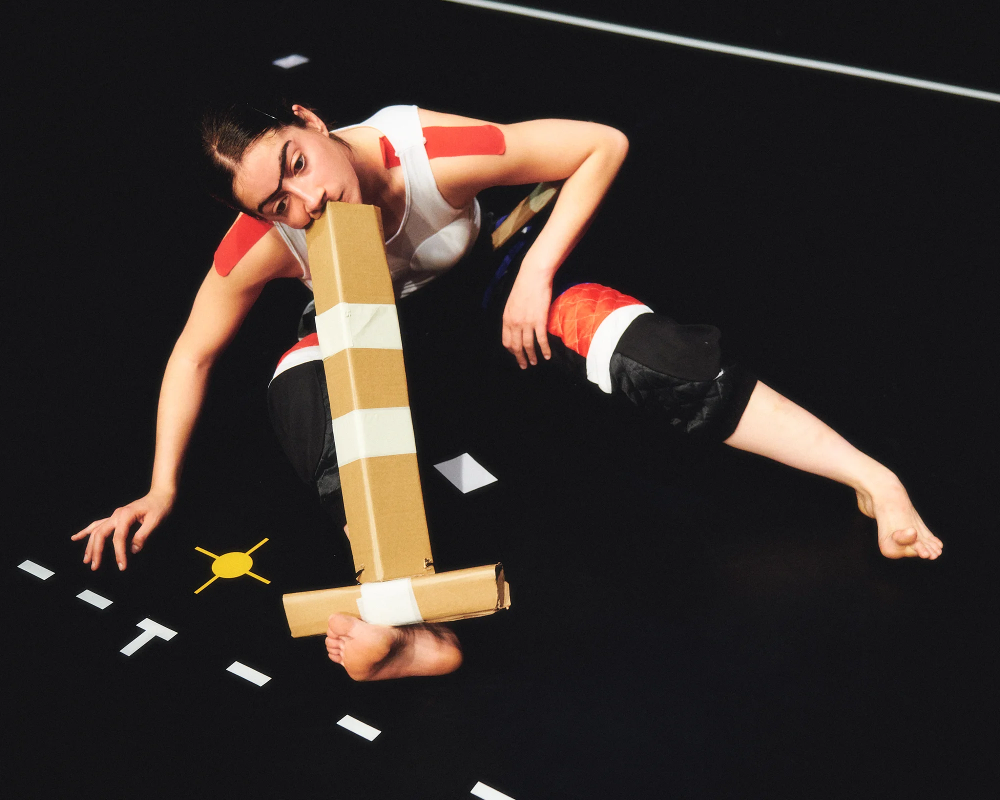
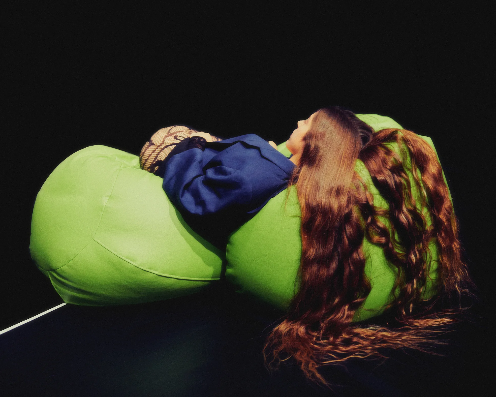
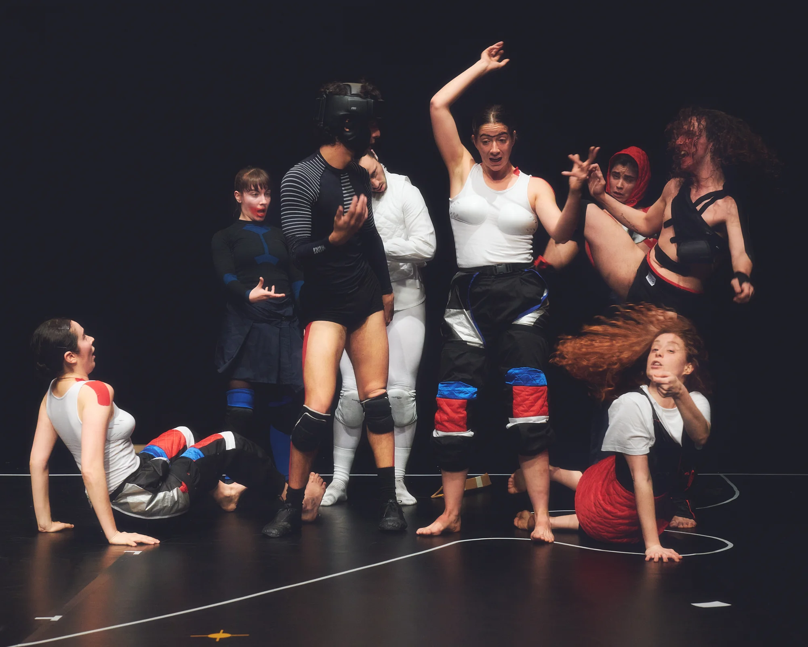
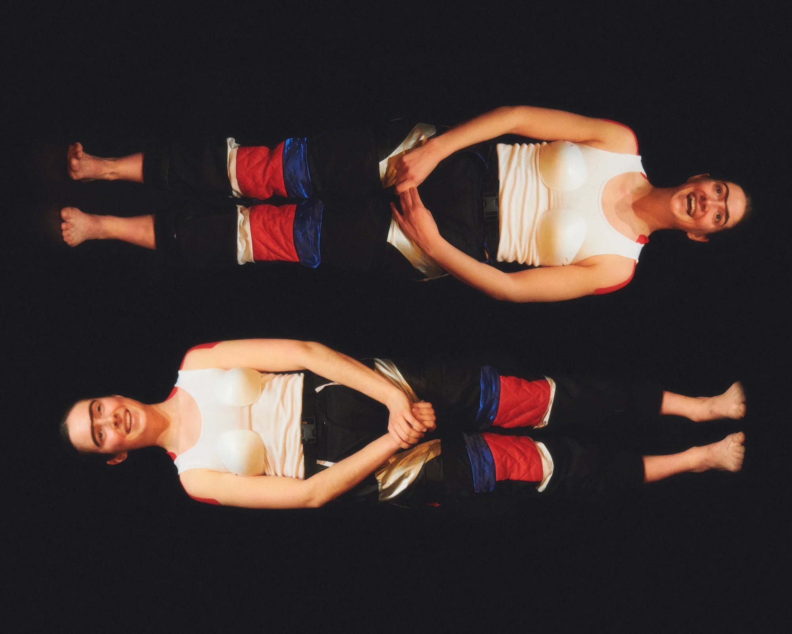
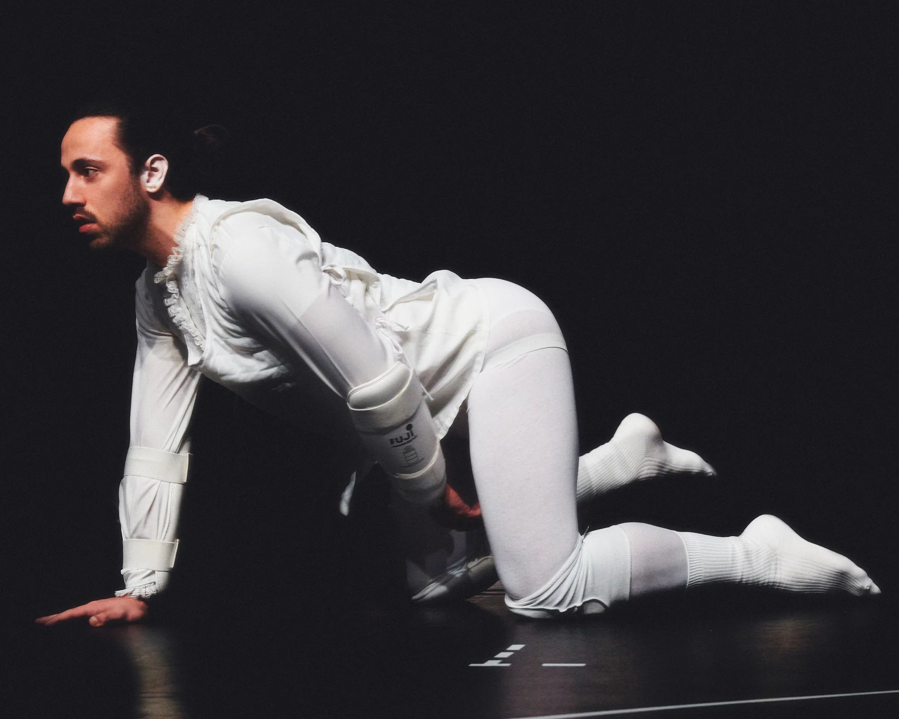

ACLUCALLS (2022)
dance piece / laSADCUM
A dance piece that makes a grotesque portrait of the post-Internet society and generation based on three representative concepts: workout, screen and computer programming; exposing some of the traumas and generational frustrations on stage..
- Award to Best Choreography at the DansaCat Awards 2024
- Award to Best Sound Design at the DansaCat Awards 2024
- Direction and Choreography
- Guillem Jiménez
- Movement Asistant
- Carla Moll
- Performance
- Alexa Moya, Carla Moll, Guillem Jiménez, Jaume Clotet, Javi Valls, Judit Amengual, Laia Camps, Meritxell de Soto, Ona Cros, Stefano de Luca, Marina Olivares & Vera Palomino
- Original music and sound design
- DA ROCHA
- Set and lighting
- Oriol Corral
- Media art
- Guillem Jiménez
- Costume design
- Gina Berenguer
- Extrenal view
- Claudia Mirambell
- Grafic design and animation
- Aina Mira
- Logo Design
- Eduard Taberner
- Agent of producction
- Blanca Sartorius
- Producción
- Anastàtica Cultural - Muntsa Roca
- Artistic Intership
- Gabriel Levie
- Trailer
- Johann Pérez
- Pictures
- Pablo de Pastor
- Coproduccion
- CCCB, laSADCUM, ELAMOR
- With the support of
- Dansa Metropolitana, Centre Cívic Barceloneta, Ayudas Creación Injuve, La Caldera, OSIC Generalitat de Catalunya & Graner
- Thanks to
- Pol Jiménez, Fito Conesa, Amalia S. de Nieves, Miquel Sánchez, Col·lectiu HIRU & participantes del crowdfunding.
Pics by Pablo de Pastor




